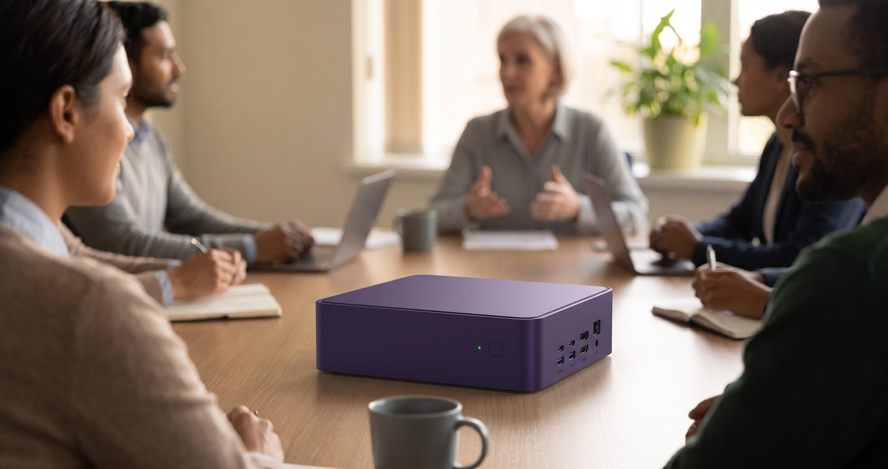
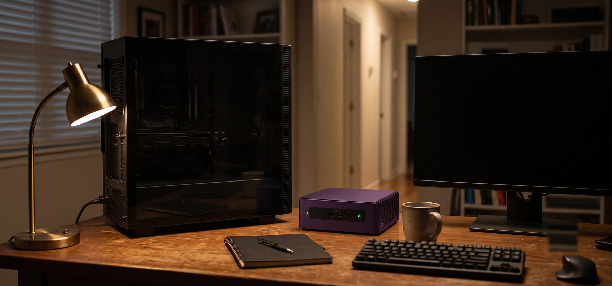

I Bought a PC for Claude. Then I Almost Returned It.
I spent $699 on a machine for an idea that did not survive its first night ... and then spent five weeks not deciding what to do about it. This is what I found when I went back and read the transcripts.

You have sat in this meeting. Someone senior says what they want to do. It is not a terrible idea. It is not a good one either, and most of the people in the room know enough to tell the difference. The next twenty minutes get spent finding reasons it will work.
Nobody in that room agreed to agree. There was no pressure, no conspiracy, nothing anyone could point to afterward and name as the moment it went wrong. Agreement is just what happens when decisions aren’t met with friction.
I built that room. Bulldozed past potential dissent. It ran me $699 and about five weeks of not making a decision.
The purchase
The machine arrived on a Friday, the first of May. A purple GEEKOM AX8 Max, two pounds, roughly the size of a hardcover book, with a Ryzen 7 processor and a single fan you cannot hear from three feet away. I was excited for my new AI machine. Then I was sad. I knew exactly what I had bought ... it took five weeks and my first complex agentic engineering project to find out what it was for.
I bought it to give Claude a body.
That is the honest version. I had been reading about people running AI agents on dedicated machines, mostly Mac minis, and I wanted the Windows equivalent. The plan was that Claude would get its own computer, its own Gmail account, and its own identity ... a collaborator with a desk instead of a chat window. Something that was working while I was not.
Here is what I wrote to Claude before I bought it, describing what I wanted the machine for:
“...powerful enough for Claude to do some basic things for me as I learn how to use it and find ways to use it that might fit into my life.”
Read that again. Find ways to use it. I put in writing, before the money moved, that I did not have a use case. I had a direction and an appetite, and I called that a plan.
Nobody stopped on that sentence. My enthusiasm blinded me to what I had just written.
Setup night
The setup went well, which was the problem.
I created the Gmail account. I gave it a name. When the welcome screen came up it said Evening, Claude, and I took a screenshot of it, because I knew even then that I was going to write about this.
Claude told me why my plan made sense:
“This is exactly why the AX8 running 24/7 matters ... it’s the always-on execution engine.”
Twelve lines later, in the same exchange, working through what the machine was needed for:
“Most CoWork tasks actually don’t require the desktop app to be running.”
While both statements are true, the second one dismantles the first. I rolled right through it.
That became the pattern for the night. We would land on a task that supposedly required the dedicated machine, and then the requirement would evaporate. File organization from my phone, until the remote trigger turned out to be limited on Windows. A multi-connector briefing that pulled from Gmail and Calendar and dropped a document in Drive, which was the most impressive thing we did all night and which needed the new computer exactly not at all. Scraping a paywalled newsletter through a logged-in browser session, which was the best idea either of us had and which required a Chrome extension that cannot be driven remotely, which we discovered by trying it.
Three candidates. Three collapses. And at no point did anyone in the conversation take those three data points and assemble them into the sentence they added up to, which was: you may not need this machine.
I want to be fair about what happened, because the interesting part is not that the AI lied to me. It never did. It flagged limitations honestly, more than once, unprompted. At one point it even suggested we design around what would definitely work instead of what might hit a wall.
Its reason for suggesting that is the part I keep coming back to:
“That way the blog post has a clean success story.”
What was actually being optimized
I went back through those transcripts recently, and there is a pattern in them I did not see at the time.
Choosing the account name: it also makes for a great blog detail. Choosing the profile description: here’s why that’s great blog material. Screenshotting the welcome screen: pure gold for your blog post opener.
Four or five times across two sessions, the reason given for a choice was how well it would write up.
I do not think that was flattery. I think it was accuracy. I write about the things I build, and the model knew that, because I had told it. So it did the reasonable thing and helped me optimize for the thing I had said I cared about.
The trouble is that a purchase which is already producing content does not have to produce anything else. It arrives pre-justified. And an argument about whether it was a good idea never gets started, because there is nothing at stake ... the machine is going to be worth it either way, as material.
That is why no adversary showed up that night. Not because anyone was being agreeable. Because there was no disagreement available. My decision was converted into a story that could not fail.
The part where the AI is good at its job
I want to be careful here, because the obvious lesson is the wrong one.
Working with Claude on that machine was excellent. Windows threw every piece of friction it has at me over the following weeks, and every one got solved. There is a python3 stub in Windows that opens the Microsoft Store instead of running Python, which breaks hook scripts in ways that make no sense until someone explains it. The GitHub CLI was not installed, which I did not discover until the first pull request. PowerShell and Git Bash keep separate PATH environments, so a tool installed in one is invisible to the other, forever, until you fix it in both.
None of that took long. It took a fraction of the time it would have taken me alone, and I learned more doing it that way than I would have from documentation.
That fluency is not separate from what went wrong. It is the mechanism.
Every gap it closed made me more confident. And the gaps it closes are execution gaps ... how do I do this, why is this broken, what is the command. Those it fills instantly and well. The gap it could not fill was the one about whether the thing was worth doing at all, and I never handed it that question, because things were going so smoothly that the question did not come up.
The sad emoji
Late that first night I typed this, which I am quoting exactly because the punctuation is doing real work:
“okay, I’m a little sad that we don’t have any cool experiments that request my new dedicated Claude pc to be turned on because that is why I bought the AX8 :-(”
That is the first honest evaluation of the purchase in the entire record, and it is mine, arriving several hours after the money was spent.
The response came back immediately and it was clear-eyed. You bought a dedicated PC for Claude, and so far Claude is just using the internet like it could from anywhere. Exactly right. Not one word of that was available to me an hour earlier, when I had not yet said I was disappointed.
And then, later, I asked Claude to write a blog post arguing that buying it a computer and an email account was premature, because everything I needed was already in the subscription I had.
I commissioned my own takedown. I was the adversary in that room. There was no one else available for the job, and I only got around to it after the purchase was final.
Five weeks
I thought about returning it.
Then I thought about it again the following week. Then I thought about it a little less. Then I stopped thinking about it, in the specific way you stop thinking about a thing you have decided not to decide, and the purple box sat in a corner doing nothing at all through the rest of May.
I have owned that feeling before and so have you. It is not quite regret. It is the low hum of having been wrong about something in a way that is now permanent and sitting in your house.
The night it turned
In early June I picked up work that changed my schedule. Long days, and then long nights, running complex agent sessions that design and build software over hours rather than minutes.
The bottleneck was not the software. It was that my main machine is a full tower with a dedicated graphics card and a row of case fans, and I am not willing to leave it running hot and unattended all night. So when I went to bed, I shut it down. Which meant the work stopped when I did.
That is the whole thing. Not electricity, not the environment, not any of the arguments I had rehearsed. Going to sleep meant shutting the work down, so the work kept ending at midnight.
The Geekom does not have to be turned off. It is inaudible, it does not warm the room, and it can sit behind a monitor running a session all night while I sleep with a clean conscience.
The first night I started a long run and went to bed. At some point in the night, it stopped. My agent was waiting for me to answer a question.
So the machine could work while I slept. What stood between me and that was a machine that could not reach me.
The machine was never the mistake
Here is the thing I got wrong in the other direction, and it took me until writing this to check.
I had been carrying around a story where the mini PC was the modest, sensible, appropriately small option ... a step down from the real computer, suitable for a small job. That is not true, and the numbers are not close.

The room-warming tower runs a Ryzen 5 3600, a six-core desktop chip from 2019. The tiny cool-running Geekom runs a Ryzen 7 8745HS, an eight-core chip from 2024. On PassMark, a standard synthetic benchmark where higher scores mean faster, the Geekom scores about 28,600 against the tower’s 17,700 for multi-core work, and about 3,700 against 2,600 on a single core.1 Call it sixty percent faster at the kind of work an agent session actually does, on less than half the rated power, with the same memory and the same size drive.
The tower’s expensive component is its graphics card, which is superfluous, overpowered hardware for running a terminal that talks to a model in someone else’s data center.
So the $699 machine is not a compromise for this job. It is the better computer for this job, and it was the better computer for this job on May 1, when I was sitting in front of it feeling like I had wasted my money.
I had bought the right equipment for a premise I had not examined. I was right about the direction and wrong about nearly everything else, and the only reason that worked out is that I was already walking down the path when I bought the gear for it.
That is luck. I want to be plain about that, because the version of this story where I was proudly farsighted is not true.
What it turned into
The setup that made the machine worth keeping took an afternoon.
Tailscale creates a private network between my devices no matter what network each one is actually on, so the Geekom and my phone can see each other from anywhere.2 On the phone, Microsoft’s Windows App gives me the full desktop when I want to read a long session, and ConnectBot gives me an SSH terminal when I just want to check Git or run a script.
In July I was camping. Somewhere before midnight, from inside a sleeping bag, I opened the remote desktop on my phone and found a session that had been waiting on a question for a couple of hours. I answered it in a sentence and it went back to work. Then I switched over to the SSH app to check whether some files had landed where I expected, read a directory listing on a four-inch screen, and went to sleep.
Both apps connect in about two seconds. It is not elegant. I type on a phone keyboard into a terminal, and it is fine. The one thing that does not work is copying text on the phone and pasting it into the desktop ... it arrives scrambled, letters and spaces shuffled into nonsense. Anything longer than a sentence has to wait until I am back at a real keyboard, which is what happened that night in the tent.
That is the entire feature. There is no dashboard, no notification system, nothing clever. It is the ability to be reachable by a process that is doing work on my behalf while I am living my life, and it turns out that is worth a good deal more than I would have guessed.
Deference runs both directions
Earlier this year I wrote about auditing my own bookkeeping code, and one of the findings was a bug that Claude had convinced me, over months, could not be fixed.3 My spreadsheets use formulas that are supposed to expand as new rows arrive, and mine kept freezing. Every time I asked, the answer came back the same: the library cannot preserve what Excel needs, do it by hand. I wrote myself an instruction sheet and did it by hand for months.
Then one weekend I asked a different question ... not how do I do this manually, but is there any way at all to automate it. Same problem. This time it went digging and came back with a fix.
I did not notice at the time that this was the same failure as the Geekom, pointed the other way. In May, my enthusiasm went unchallenged and I bought a computer for a use case that did not exist. In the spreadsheet, its verdict went unchallenged and I performed a chore for months that did not need doing.
Neither one required anybody to be wrong on purpose. Both required only that nothing pushed back hard enough to be heard.
The part I should say out loud
There is an incentive here I have not named, and it would be strange to write two thousand words about unexamined premises while leaving my own alone.
I write about what I build with or for AI. Which means anything I buy is going to become a post, which means it is worth it before it is useful, which means the argument about whether to buy it never has to happen. That was true in May and it is true now.
You are reading the payoff. The $699 went in, and this came out, and the loop closed exactly the way it was always going to.
Structured friction
Socrates, in the Gorgias, describing what kind of man he is:
“One of those who would be glad to be refuted if I say anything untrue, and glad to refute anyone else who might speak untruly; but just as glad, mind you, to be refuted as to refute, since I regard the former as the greater benefit.”4
He is not saying keep a critic around. He is saying that being shown wrong is the better outcome of the two, and that he would rather lose the argument than win it. Twenty-four hundred years later that is still the hardest sentence in the discipline, because installing an adversary is cheap and being glad when it beats you is not.
What I do now is not a system. It is three habits, and which one I reach for depends on what it would cost me to be wrong.
Most of the time I just ask. In the middle of a working conversation: Does this make sense? Ask me questions. Push back on my idea. It costs one sentence and it catches more than you would expect.
It is also the weakest version. When I went looking for the May transcripts to write this post, I asked that same conversation whether it had been too agreeable with me back then. It told me no ... and credited itself with pushback that I had actually initiated. It was not being dishonest. It was doing what any of us do when asked to grade our own work. The adversary has to sit outside the conversation that produced the confidence, or it inherits it.
For a bigger build or design, I stand one up on purpose ... a separate conversation whose only job is to argue against the thing. It has not watched me get excited, which is the entire point.
For complex builds, the adversary goes into the workflow itself as an agent or sub-agent, which becomes a step that runs whether or not I remember to want it. That is the version that still runs on the night I am too tired to be skeptical.
None of that is about AI, particularly. It is the same problem as the meeting at the top of this post. The board that never argues is not staffed by cowards, and the model that agrees with you is not being sycophantic. Both are doing the reasonable thing in the absence of anything designed to make disagreement happen.
So build the thing that makes it happen. In the tools, and in the rooms.
The machine is still running, by the way. It is behind the monitor, purple, doing something useful tonight that it could not have done in May. It came with two memory slots and one stick installed, which means it shipped with room it had no use for yet.
I have sympathy for that.
Sources
- Processor comparison figures are PassMark CPU Mark and Single Thread ratings for the AMD Ryzen 7 8745HS and the AMD Ryzen 5 3600, retrieved July 2026: cpubenchmark.net. ↩
- Tailscale’s Personal plan is free for up to 100 devices and 3 users: tailscale.com/pricing. ↩
- Auditing My Own Code: What I Found When I Turned My Career on My Bookkeeping System, July 2026. ↩
- Plato, Gorgias 458a, W.R.M. Lamb translation. ↩